승강기기사 (2010-09-05 기출문제)
1과목: 승강기 개론
1. 엘리베이터의 주행 중 혹은 가감속시 와이어로프가 미끄러지지 않도록 트랙션능력을 충분히 검토할 필요가 있다. 여기서 트랙션비(traction ratio)에 대한 설명으로 옳은 것은?
- 트랙션비는 0이상이다.
- 트랙션비가 낮으면 로프의 수명이 길게 된다.
- 트랙션비가 높으면 전동기의 출력을 작게 할 수 있다.
- 트랙션비가 높으면 로프와 도르레와의 마찰력이 작아진다.
(정답률: 74%)

2. 두 대 이상의 엘리베이터가 동일 승강로에 병설 될 때의 비상구출구에 관한 설명 중 틀린 것은?
- 두 개의 카벽 측부에 구출구를 설치할 수 있다.
- 구출구는 카 내부로 열리는 구조이어야 한다.
- 구출구는 외부에서 열쇠를 사용하여 열어야 한다.
- 문이 열려있는 동안에는 운전이 불가능하여야 한다.
(정답률: 61%)
3. 에스컬레이터 제동기의 작동상태에 대한 설명으로 적재하중을 작용시키지 않고 디딤판이 상승할 때의 정지거리로 적합한 것은?
- 1m 이상 2m 이하
- 0.5m 이상 1m 이하
- 0.1m 이상 0.6m 이하
- 0.6m 이상 1.2m 이하
(정답률: 50%)
4. 엘리베이터의 적재하중 1150kg, 정격속도 1⑤m/min, 오버밸런스율 40%, 총합효율이 75%일 때 권상전동기의 용량은?
- 약 10.5[kW]
- 약 11.8[kW]
- 약 14.2[kW]
- 약 15.8[kW]
(정답률: 63%)
5. 기계실의 온도는 원칙적으로 몇 ℃이하로 유지되어야 하는가?
- 30℃이하
- 35℃이하
- 40℃이하
- 45℃이하
(정답률: 85%)
6. 교류 2단 속도제어 방식에서 고속과 저속의 속도비로서 일반적으로 가장 많이 사용되는 것은?
- 2:1
- 3:1
- 4:1
- 6:1
(정답률: 84%)
7. 유압식 엘리베이터에서 간접식의 장ㆍ단점에 대한 설명으로 틀린 것은?
- 실린더의 점검이 용이하다.
- 승강로는 실린더를 수용할 부분만큼 커지게 된다.
- 비상정지장치가 필요하다.
- 로프의 늘어짐과 작동유의 압축성 때문에 부하에 의한 카 바닥의 빠짐이 비교적 작다.
(정답률: 72%)
8. 사람이 탑승하지 않으면서 적재용량 1톤 미만의 소형화물운반에 적합하게 제작된 것은?
- 화물용 엘리베이터
- 자동차용 엘리베이터
- 덤웨이터
- 수평보행기
(정답률: 82%)
9. 교류엘리베이터에서 가장 많이 사용하고 있는 전동기는?
- 농형유도전동기
- 교류 정류자전동기
- 분권전동기
- 직권전동기
(정답률: 79%)
10. 나선형 에스컬레이터라고도 하며 나선형으로 상승 또는 하강하는 에스컬레이터는?
- 옥내용 에스컬레이터
- 모듈러 에스컬레이터
- 옥외용 에스컬레이터
- 스파이럴 에스컬레이터
(정답률: 81%)
11. 초고층 빌딩 등에서 중간의 승계층까지 직행 왕복운전하여 대량수송을 목적으로 하는 엘리베이터는?
- 더블데트 엘리베이터
- 셔틀 엘리베이터
- 역사용 엘리베이터
- 보도교용 엘리베이터
(정답률: 78%)
12. 전망용 엘리베이터의 카에 사용할 수 있는 유리가 아닌 것은?
- 망유리
- 강화유리
- 접합유리
- 복층유리
(정답률: 60%)
13. 카를 안전하게 정지시키는 제동기가 갖추어야 할 제동능력으로 옳은 것은?
- 승용승강기는 125% 부하, 화물용 승강기는 120% 부하로 전속하강 중의 카를 위험 없이 감속정지 할 수 있는 능력
- 승용승강기는 110% 부하, 화물용 승강기는 1⑤% 부하로 전속하강 중의 카를 위험 없이 감속정지 할 수 있는 능력
- 슈(shoe)의 작용으로 마찰력과 스프링으로 정지하므로 부하용량과 무관
- 고속승강기는 전기적으로 정지시키므로 기계적 제동력은 필요 없음
(정답률: 81%)
14. 기계실의 소요 환기풍량을 산출하기 위하여 발생 열량을 산출하려고 한다. 발생열량 산출과 관계가 없는 것은?
- 기계실의 크기
- 적재하중
- 제어방식
- 속도
(정답률: 68%)
15. 교류엘리베이터의 제어방식이 아닌 것은?
- 2단속도 제어
- 귀환전압 제어
- 인버터 제어
- 정지레오나드 제어
(정답률: 75%)
16. 건축물에 엘리베이터의 설비를 계획할 때 고려하여야 할 사항이 아닌 것은?
- 가능한 동일 장소에 집중배치하여 교통부하를 평균화한다.
- 4대 이상일 경우에는 일렬배치보다는 대면배치하여 승객의 편의를 도모한다.
- 건물 내의 피크시의 교통은 일시적이므로 무시하고 평균 교통량으로 엘리베이터의 설비계획을 세워 비용을 절감한다.
- 건축물의 교통수요에 대하여 엘리베이터의 규모는 속도, 용량, 대수, 군관리방식 등을 결정한다.
(정답률: 79%)
17. 다음 중 일반적으로 카측 뿐만 아니라 균형추 측에도 비상정지장치를 설치하여야 하는 경우는?
- 카의 속도가 210m/min 이상인 경우
- 피트 깊이가 1800mm 이상인 경우
- 카의 속도가 300m/min 이상인 경우
- 피트 바닥하부를 사람이 출입하는 통로 등으로 사용할 경우
(정답률: 86%)
18. 승강기 제어반의 절연저항에 관한 설명 중 틀린 것은?
- 누전에 의한 감전재해나 전기화재와 같은 사고를 방지하기 위하여 측정한다.
- 제어회로전압 150V이하는 0.02 MΩ이상이어야 한다.
- 전동기 주회로의 절연저항은 제어반의 각 과전류차단기를 끊은 상태에서 검사한다.
- 신호회로전압 150V이하는 0.1MΩ이상이어야 한다.
(정답률: 60%)
19. 엘리베이터 카 내의 비상조명등의 밝기에 대한 설명으로 옳은 것은?(관련 규정 개정전 문제로 기존 정답은 1번이었으며 여기서는 1번을 누르면 정답 처리 됩니다. 자세한 내용은 해설을 참고하세요.)
- 정전시에 램프 중심부로부터 2m 떨어진 수직면상의 조도가 1Lux 이상이어야 한다.
- 정전시에 램프 중심부로부터 2m 떨어진 수직면상의 조도가 10Lux 이상이어야 한다.
- 카 바닥면의 조도가 1Lux 이상이어야 한다.
- 카 바닥면의 조도가 10Lux 이상이어야 한다.
(정답률: 76%)
20. 일종의 압력조정밸브로 회로의 압력이 설정값에 도달하면 밸브를 열어 기름을 탱크로 돌려보냄으로 압력이 과도하게 높아지는 것을 방지하기 위한 것은?
- 유량제어밸브
- 안전밸브
- 역저지밸브
- 필터
(정답률: 74%)
2과목: 승강기 설계
21. 균형추에 관한 내용 중 잘못된 것은?
- 균형추의 틀은 보통 구형강으로 제작되어 상ㆍ하부에 부착된 가이드슈에 의해 이동한다.
- 웨이트는 보통 주철이나 특수 콘크리트로 제작되며 이것은 충격에 견딜 수 있는 구조이어야 한다.
- 균형추의 총 중량은 빈 카의 하중에 그 엘리베이터의 사용 상황에 따라 적재하중의 55~75%의 중량을 더한 값으로 하는 것이 보통이다.
- 카측 로프가 매달고 있는 중량과 균형추측 로프가 매달고 있는 중량의 비를 트랙션비라 한다.
(정답률: 70%)
22. 엘리베이터 내 방범설비에 대한 설명으로 틀린 것은?
- 출입구의 도어에 유리창 설치
- 격층 강제정지 운전장치
- 카내에 경보장치 설치
- 동시통화 방식 인터폰 설치
(정답률: 67%)
23. 다음 중 비상용 승강기를 반드시 설치해야 하는 것은?
- 높이 31m를 넘는 각 층의 바닥면적 중 최대 바닥면적이 1500mm2이상인 건축물
- 높이 31m를 넘는 각층을 거실외의 용도로 쓰는 건출물
- 높이 31m를 넘는 각층의 바닥면적의 합계가 500mm2이하인 건축물
- 높이 31m를 넘는 층수가 4개층 이하로서 당해 각층의 바닥면적의 합계 200mm2이내마다 방화구획으로 구획한 건축물
(정답률: 73%)
24. 엘리베이터 브레이크의 능력에 관한 사항 중 틀린 것은?
- 제동력을 너무 작게 하면 제동시 회전부분에 큰 응력을 발생시킨다.
- 정지 후 부하에 의한 언밸런스로 역구동되어 움직이는 일이 없도록 유지되어야 한다.
- 브레이크는 카나 균형추 등 엘리베이터의 전 장치의 관성을 제지할 필요가 있다.
- 화물용 엘리베이터는 정격의 120% 부하로 전속 하강 중 위험 없이 감속ㆍ정지할 수 있어야 한다.
(정답률: 62%)
25. 적재하중 1000kg, 카자중 1200kg이고, 단면계수 Z=225cm3인 SS-400을 1본 사용한(1:1로핑) 상부체대의 응력은? (단, 상부체대의 길이는 180cm이다.)
- 200[kg/cm2]
- 240[kg/cm2]
- 400[kg/cm2]
- 440[kg/cm2]
(정답률: 50%)
26. 초고층 빌딩의 서비스층 분할에 관한 설명 중 틀린 것은?
- 일주시간은 짧아지고 수송능력은 증대한다.
- 급행구간이 만들어져 고속성능을 충분히 살릴 수 있다.
- 동일 테넌트가 다른 층으로 건너타고 있는 것은 층간교통이 불편해지고 거북스럽다.
- 건물의 인구분포에 큰 변동이 있을 때 간단하게 분할점을 바꿀 수 있다.
(정답률: 46%)
27. 파이널 리미트 스위치(final limit switch)의 설계에 대한 설명으로 틀린 것은?
- 카가 완충기에 도달 후에 작동하도록 설계한다.
- 승강로 내부에 설치하고 카에 부착된 캠으로 동작시킨다.
- 카 또는 균형추가 완전히 압축된 완충기 위에 얹히기까지 작용을 계속하도록 한다.
- 카가 종단층을 통과한 뒤에는 전원이 권상 전동기로부터 자동적으로 차단되도록 한다.
(정답률: 83%)
28. 기계실의 구조에 대한 설명 중 틀린 것은?
- 기계실의 바닥면적은 원칙적으로 승강로 수평투영 면적의 2배 이상으로 한다.
- 기계실 바닥면부터 천장 또는 보의 하부까지의 수직거리는 2m 이상으로 한다.
- 기계실의 실온은 유지관리에 지장이 없도록 원칙적으로 40℃ 이하를 유지하여야 한다.
- 기계실 출입문의 폭은 0.6m 이상, 높이는 1.8m 이상으로 한다.
(정답률: 77%)
29. V벨트의 특징이 아닌 것은?(오류 신고가 접수된 문제입니다. 반드시 정답과 해설을 확인하시기 바랍니다.)
- 축간 거리가 비교적 짧은 데에 사용한다.
- 운전소음이 크고 충격 흡수효과가 있다.
- 미끄럼이 적고 전동 회전비가 크다.
- 수명이 길다.
(정답률: 59%)
30. 길이가 40m인 로프에 250kg의 하중이 작용할 때 로프가 탄성한게 내에서 늘어나는 길이는? (단, 로프의 종탄성계수는 7000kg/mm2, 로프본수는 1가닥, 로프단면적은 100mm2이다.)
- 약 14.2[mm]
- 약 18.7[mm]
- 약 32.6[mm]
- 약 53.2[mm]
(정답률: 42%)
31. 승객용 엘리베이터의 브레이스 로드에 대한 안전율은 얼마 이상으로 설계해야 하는가?
- 4
- 6
- 7.5
- 10
(정답률: 69%)
32. 가이드레일에 관한 설명으로 틀린 것은?
- 현재 사용하고 있는 가이드레일의 표준 길이는 5m 이다.
- 가이드레일 선정시 정격속도와는 큰 영향이 없으나 적재하중과는 영향이 많다.
- 15인승 속도 60m/min인 승객용 엘리베이터에는 카측에 8K, 균형추측에 13K 가이드레일을 사용한다.
- 가이드레일 강도 계산시 레일 브라켓의 설치간격도 고려되어야 한다.
(정답률: 54%)
33. 승강기 감시반에 관한 설명으로 틀린 것은?
- 일반 감시반과 컴퓨터 감시반이 있다.
- 일반 감시반에는 분석 기능이 없다.
- 감시반의 기능과 비상호출 기능은 별개이다.
- 컴퓨터 감시반은 도어의 개폐상태를 감시할 수 있다.
(정답률: 68%)
34. 동기속도 1500[rpm], 전부하회전수 1420[rpm]인 전동기의 슬립은?
- 약 5.3[%]
- 약 6.4[%]
- 약 7.5[%]
- 약 8.6[%]
(정답률: 66%)
35. 로프식 엘리베이터에서 주로프에 관한 설명으로 틀린 것은?
- 주로프의 안전율이 10 이상이 되도록 여러 가닥의 로프를 사용하는 경우에 직경은 8mm 이상으로 할 수 있다.
- 직경은 항상 공칭지름 12mm이상이어야 한다.
- 끝부분은 1본마다 로프소켓에 바빗트 채움을 하거나 체결식 로프 소켓을 사용하여 고정하여야 한다.
- 카 1대에 대하여 3본(권동식의 경우 2본)이상 이어야 한다.
(정답률: 70%)
36. 변압기 용량 산정시 인버터 엘리베이터의 경우 실효(RMS)전류는 ?
- 무부하 상승전류의 40%
- 전부하 상승전류의 50%
- 무부하 상승전류이 60%
- 전부하 상승전류의 70%
(정답률: 66%)
37. 적재하중이 1600kg이고 정격속도가 240m/min인 엘리베이터의 피트 깊이에 관한 기준으로 옳은 것은?
- 3.2m 이상
- 3.4m 이상
- 3.6m 이상
- 3.8m 이상
(정답률: 46%)
38. 전동기에서 GD2에 대한 설명으로 옳은 것은?
- 주어진 전압의 파형이 전류보다 앞서는 정도이다.
- 일정한 토크로 전동기를 가동시켰을 때 빨리 가동하는가 또는 늦게 가동하는가의 정도이다.
- 전동기의 출력이 회전수에 비례하여 변화하는 정도이다.
- 전동기의 출력을 회전수에 관계없이 일정하게 나타내는 것이다.
(정답률: 54%)
39. 완충기에 대한 설명으로 옳은 것은?
- 스프링 완충기에서 카측 완충기는 스프링간의 접촉된 부분이 없이 정하중 상태에서 카 자중의 2배를 견디어야 한다.
- 유입완충기의 행정은 정격속도의 125%의 속도로 충돌했을 때 평균감속도 1G이하로 정지시켜야 한다.
- 유입완충기에서 카측 완충기의 최소 적용용량은 카 자중이다.
- 유입 완충기의 플런저를 완전히 압축한 상태에서 완전 복귀할 때까지 요하는 시간은 90초 이하로 한다.
(정답률: 55%)
40. 동기 기어레스 권상기를 설계하려고 한다. 주 도르래의 직경을 작게 설계할 경우에 대한 설명으로 틀린 것은?
- 소형화가 가능하다.
- 주 로프의 지름이 작아질 수 있다.
- 회전수가 빨라진다.
- 브레이크 제동 토크가 커진다.
(정답률: 74%)
3과목: 일반기계공학
41. 전동기나 유압모터와 공기압 모터를 비교했을 때 일반적으로 공기압 모터의 특징에 대한 설명으로 거리가 먼 것은?
- 과부하시의 위험성이 낮다.
- 폭발의 위험성이 있는 환경에서 사용할 수 있다.
- 기동, 정지, 역전 시에 쇼크의 발생 없이 자연스럽다.
- 부하에 따른 회전수 변동이 적어 일정한 회전수를 유지할 수 있다.
(정답률: 55%)
42. 다판 클러치에서 접촉면 안지름 50mm, 바깥지름 90mm이고 스러스트 하중 70N을 작용시킬 때 전달할 수 있는 토크는 몇 Nㆍmm인가? (단, 클러치 마찰면은 4개, 마찰계수는 μ=0.3이다.)
- 735
- 2,940
- 3,240
- 9,800
(정답률: 48%)
43. 구멍(축)의 허용한계치수의 해석에서 “통과측에는 모든 치수, 또는 결정량이 동시에 검사되고, 정지측에는 각 치수가 개개로 검사되어야 한다.”는 원리는?
- 아베(Abbe)의 원리
- 테일러(Taylor)의 원리
- 자콥스(Jacobs)의 원리
- 브라운 샤프(Brown sharp)의 원리
(정답률: 72%)
44. 탄소강에 내열성을 증가시키기 위하여 첨가되는 합금원소로 고온에서 산화피막이 형성되어 내부에 산화되는 것을 방지하는 원소는?
- Cr
- Cu
- Mn
- Ni
(정답률: 73%)
45. 연강의 인장시험 결과 얻어진 응력-변형률 선도에서 시험편에 가해진 힘을 시험편의 초기 단면적으로 나누어 계산하는 응력은?
- 진 응력
- 공칭 응력
- 변형 응력
- 탄성 응력
(정답률: 62%)
46. 원심펌프에서 양수장치의 구성품에 속하지 않는 것은?
- 흡입관
- 풋밸브
- 니들 밸브
- 게이트 밸브
(정답률: 58%)
47. 레디얼 하중과 스러스트 하중을 동시에 받을 수 있는 베어링은?
- 니들 베어링
- 볼 베어링
- 자동조심 볼 베어링
- 테이퍼 롤러 베어링
(정답률: 76%)
48. 연삭숫돌에서 인조입자의 종류가 아닌 것은?
- 산화알루미늄
- 탄화규소
- 탄화붕소
- 에머리(emery)
(정답률: 76%)
49. 용접방법의 종류 중 전기저항 용접이 아닌 것은?
- 심 용접
- 점 용접
- 테르밋 용접
- 프로젝션 용접
(정답률: 70%)
50. 절삭 가공 방식 중에서 절삭공구가 회전하지 않는 공작기계는?
- 선반
- 밀링 머신
- 호빙 머신
- 드릴링 머신
(정답률: 75%)
51. 펌프를 터보형과 용적형으로 구분했을 때 용적형의 회전식펌프에 속하는 것은?
- 기어 펌프
- 사류 펌프
- 플런저 펌프
- 피스톤 펌프
(정답률: 73%)
52. 탄소강의 청열취성(靑熱脆性)을 일으키는 온도범위는?
- 100~150℃
- 200~300℃
- 400~500℃
- 600~700℃
(정답률: 70%)
53. 평벨트 전동장치에서 축간거리가 5m, 풀리 지름이 d1=150mm, d2=450인 평행걸기를 하였다면 벨트의 길이는 약 몇 cm인가?
- 9⑤
- 1095
- 19⑤
- 2195
(정답률: 58%)
54. 제게르 콘(Seger cone)은 주조용 주물사(鑄物砂)의 어떤 시험에 사용하는가?
- 내화도 시험
- 성형성 시험
- 입도 시험
- 압축 시험
(정답률: 68%)
55. 지름이 500mm인 배관 속을 평균속도 1.8m/s로 물이 흐를 때 관의 길이가 60m이면 배관의 손실수두는 약 몇m인가? (단, 관 마찰계수(f)는 0.02이다.)
- 0.099
- 0.198
- 0.397
- 0.793
(정답률: 45%)
56. 인장강도가 200N/m2인 연강봉을 안전하게 사용하기 위한 최대허용응력은 몇 Pa인가? (단, 봉의 안전율은 4로 한다.)
- 20
- 30
- 40
- 50
(정답률: 76%)
57. 다음 중 숏 피닝(shot peening) 작업에 관한 설명으로 틀린 것은?
- 냉간 가공법의 일종이다.
- 피로강도가 향상된다.
- 모래를 분사하여 표면가공을 한다.
- 표면의 불순물을 제거하여 매끈하게 한다.
(정답률: 66%)
58. 유압 펌프의 종류 중 비용적형 펌프의 종류에 속하는 것은?
- 기어 펌프
- 베인 펌프
- 터빈 펌프
- 왕복동 펌프
(정답률: 61%)
59. 평기어에서 피치원 지름 100mm, 기어 잇수가 20개일 때 원주피치는 약 얼마인가?
- 5mm
- 6.2mm
- 7.9mm
- 15.7mm
(정답률: 56%)
60. 알루미늄-규소계 합금으로 실루민에 구리, 마그네슘, 니켈을 소량 첨가한 것으로 내열성이 좋고 열팽창 계수가 작은 금속은?
- 라우탈(Lautal)
- 로엑스(Lo-ex)
- 알팩스(alpax)
- 단련용 Y합금
(정답률: 73%)
4과목: 전기제어공학
61. 하나의 폐회로를 형성하고 자동제어의 기본회로를 형성하는 제어는?
- 시퀀스제어
- 피드백제어
- 온ㆍ오프제어
- 프로그램제어
(정답률: 67%)
62. 100V용 전구로 30W와 60W 두 개를 직렬로 연결하고 직류 100V 전원에 접속하였을 때 두 전구의 상태로 옳은 것은?
- 30W가 더 밝다.
- 60W가 더 밝다.
- 두 전구가 모두 켜지지 않는 다.
- 두 전구의 밝기가 모두 같다.
(정답률: 79%)
63. 그림의 블록 선도에서 C(s)/R(s)를 구하면?
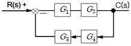
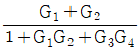
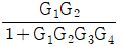
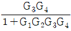
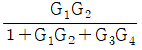
(정답률: 73%)
64. 상용전원을 이용하여 직류전동기를 속도제어 하고자 할 때 필요한 장치가 아닌 것은?
- 정류장치
- 초퍼
- 속도센서
- 인버터
(정답률: 60%)
65. 변압기에 대한 다음의 관계식 중 틀린 것은?
- 전압변동율=

- 부하손=저항손+표유부하손
- 전일효율=

- 규약효율=

(정답률: 73%)
66. 인가된 직류전압을 변화시켜서 전동기 회전수를 1000rpm으로 하고자 한다. 이 경우 회전수는 어느 용어에 해당하는가?(오류 신고가 접수된 문제입니다. 반드시 정답과 해설을 확인하시기 바랍니다.)
- 제어량
- 조작량
- 목표값
- 제어대상
(정답률: 41%)
67. 실리콘 제어 정류기(SCR)의 특성이 아닌 것은?
- PNPN 접합구조이다.
- 전력용 트랜지스터에 비해 고전압에서 우수하다.
- 쌍방향성 사이리스터이다.
- 전력제어용으로도 사용된다.
(정답률: 76%)
68. 주권선과 보조권선 중 어느 한쪽의 접속을 전원에 대하여 반대로 접속하여 회전방향을 바꾸는 전동기는 ?
- 반발기동형전동기
- 분상기동형전동기
- 콘덴서기동형전동기
- 셰이딩코일형전동기
(정답률: 53%)
69. 어떤 전지에 5A의 전류가 10분간 흘렀다면 이 전지에서 나온 전기량은 몇 [C]인가?
- 1000
- 2000
- 3000
- 4000
(정답률: 71%)
70. 축전지의 용량은 어떤 단위로 나타내는가?
- A
- Ah
- V
- kW
(정답률: 73%)
71. 위상차가 45°이고 단상 220V의 교류전압을 인가했더니 20A의 전류가 흘렀다면 소비전력은 약 몇 kW인가?
- 10.7
- 6.6
- 5.6
- 3.1
(정답률: 50%)
72. 전압을 인가하여 전동기가 동작하고 있는 동안에 교류전류를 측정할 수 있는 계기는?
- 훅 온 미터(클램프 메타)
- 회로시험기
- 절연저항계
- 어스 테스터
(정답률: 72%)
73. 전압, 전류, 주파수 등의 양을 주로 제어하는 것으로 응답속도가 빨라야 하는 것이 특징이며, 정전압장치나 발전기 및 조속기의 제어 등에 활용하는 제어방법은?
- 서보 제어
- 프로세스 제어
- 자동조정 제어
- 비율 제어
(정답률: 62%)
74. PI 동작의 전달함수는? (단, KP는 비례감도이다.)
- KP
- KPsT
- K(1+sT)
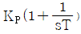
(정답률: 76%)
75. R-L-C 직렬회로에서 전압(E)과 전류(I)사이의 관계가 잘못 설명된 것은?
- XL ＞ XC인 경우 I는 E보다 θ만큼 뒤진다.
- XL ＜ XC인 경우 I는 E보다 θ만큼 앞선다.
- XL = XC인 경우 I는 E와 동상이다.
- XL ＜ (XC-R)인 경우 I는 E보다 θ만큼 뒤진다.
(정답률: 69%)
76. 동일한 도선에 온도 차가 있을 때 전류를 흘리면 열이 흡수, 발산되는 현상은?
- 불타의 법칙
- 제백 효과
- 톰슨 효과
- 펠티에 효과
(정답률: 56%)
77. 자동제어계 중에 포함되어 있는 각 요소의 신호가 어떠한 모양으로 전달되는가를 나타내는 것은?
- 타임챠트
- 논리회로
- 전개접속도
- 블록선도
(정답률: 72%)
78. 주파수 응답에 필요한 입력은?
- 계단 입력
- 임펄스 입력
- 램프 입력
- 정현파 입력
(정답률: 75%)
79. 그림(a)의 직렬로 연결된 저항회로에서 입력전압 V1과 출력전압 V0의 관계를 그림(b)의 신호흐름선도로 나타낼 때 A에 들어갈 전달함수는?(문제 오류로 그림이 정확하지 않습니다. 정답은 1번입니다. 정확한 그림 내용을 아시는분께서는 자유게시판에 그림 등록 부탁 드립니다.)
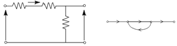
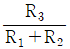
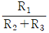
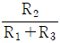
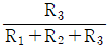
(정답률: 67%)
80.
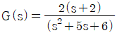
의 특성 방정식의 근은?- 2. 3
- -2, -3
- 2, -3
- -2, 3
(정답률: 62%)
설명: 트랙션비란 엘리베이터의 전동기가 로프를 움직이는 능력을 의미합니다. 트랙션비가 낮을수록 전동기가 로프를 움직이는 데 필요한 힘이 적어지므로 로프의 마찰력이 줄어들어 로프의 수명이 더 길어집니다. 따라서 엘리베이터 설계 시 트랙션비를 적절히 고려하여 로프의 수명을 연장시키는 것이 중요합니다.